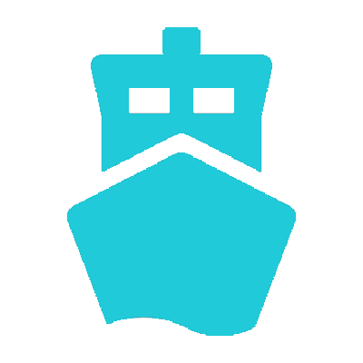

• The default mode is All Transportation, utilizing chord diagrams for data representation.
• Hover over the chord diagram to reveal tooltips indicating the transportation choices for travel between divisions.
• Upon switching between Sea, Land, or Air transportation modes using radio buttons, icons representing ports , divisions , or airports will display on the Sarawak map.
• Hover over these icons to view their respective names.
• Clicking the first icon designates the departure point, while clicking the second indicates the destination. Both selections will be displayed at the sidebar.
• Paths illustrate the route between the selected departure and destination.
• After selecting two icons, a tooltip will appear, presenting the duration and distance of travel from the departure to the destination.
-
-